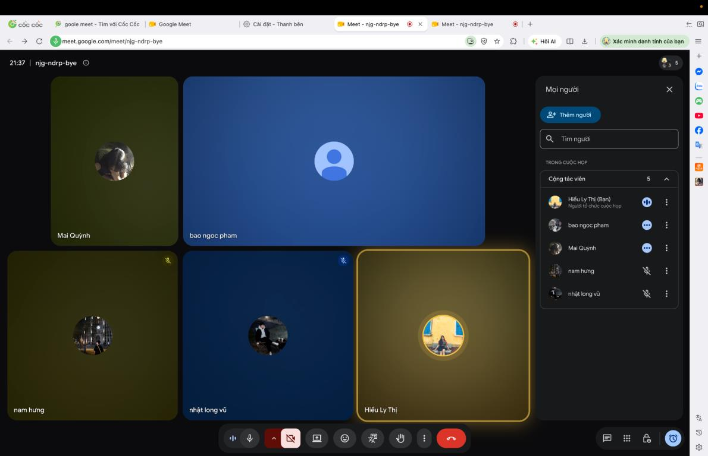

Bài 4 · Chương 4: Giao tiếp và hợp tác trong môi trường số · Điểm tối đa 0,5
Sử dụng công cụ hợp tác trực tuyến cho dự án nhóm
Tổ chức cuộc họp trực tuyến để cùng trao đổi, nghiên cứu và hoàn thiện chủ đề “Hòa thanh 4 bè cơ bản và ứng dụng trong đệm hát”.
01 / Mục tiêu
Chủ đề và mục tiêu làm việc nhóm
Nhóm lựa chọn chủ đề “Hòa thanh 4 bè cơ bản và ứng dụng trong đệm hát” vì đây là nội dung gắn với chuyên ngành Sư phạm Âm nhạc, có tính ứng dụng trong thực hành và tạo cơ hội để các thành viên trao đổi, bổ sung kiến thức cho nhau.
02 / Kế hoạch
Tổ chức cuộc họp trực tuyến
Phân công vai trò và nhiệm vụ
| Thành viên | Vai trò | Nhiệm vụ chính |
|---|---|---|
| Phạm Thị Bảo Ngọc | Nhóm trưởng, điều phối | Lập kế hoạch, điều hành cuộc họp, quản lý tiến độ và hoàn thiện báo cáo. |
| A King Thị Hiểu Ly | Thư ký | Ghi biên bản, tổng hợp quyết định, lưu trữ và chia sẻ tài liệu. |
| Đinh Quỳnh Mai | Phụ trách tài liệu | Tìm kiếm, tổng hợp kiến thức về khái niệm và cấu tạo hòa thanh 4 bè. |
| Vũ Nhật Long | Phụ trách thảo luận | Chuẩn bị nguyên tắc phối bè, ví dụ minh họa và câu hỏi thảo luận. |
| Nguyễn Hưng Nam | Phụ trách đánh giá | Tổng hợp đánh giá, đề xuất cải thiện và bài học kinh nghiệm. |
Chương trình nghị sự 25 phút
| Thời lượng | Nội dung |
|---|---|
| 3 phút | Ổn định, kiểm tra kết nối và giới thiệu mục tiêu. |
| 4 phút | Trao đổi khái niệm và cấu tạo hòa thanh 4 bè. |
| 5 phút | Thảo luận các nguyên tắc cơ bản khi viết hòa thanh 4 bè. |
| 5 phút | Phân tích ví dụ và khả năng ứng dụng trong đệm hát. |
| 5 phút | Đóng góp ý kiến và thống nhất nội dung. |
| 3 phút | Tổng kết kết quả và giao nhiệm vụ tiếp theo. |
Chuẩn bị trước cuộc họp
- Tài liệu: khái niệm và cấu tạo SATB; vai trò từng bè; nguyên tắc phối bè; ví dụ hợp âm, chuyển hợp âm và câu hỏi thảo luận.
- Thiết bị: máy tính hoặc điện thoại có Internet, micro, camera và Google Meet.
- Phối hợp: thống nhất thời gian, gửi đường link và tài liệu trước; kiểm tra âm thanh, kết nối; chỉ ghi hình khi tất cả thành viên đồng ý.
03 / Biên bản
Diễn biến và kết quả cuộc họp
Cuộc họp tập trung vào cấu trúc hòa thanh 4 bè, nguyên tắc phối hợp các bè, cách kết nối hợp âm và khả năng vận dụng vào thực hành đệm hát. A King Thị Hiểu Ly tổ chức phòng họp và ghi biên bản; Phạm Thị Bảo Ngọc điều phối nội dung theo phân công.
Nội dung trao đổi chính
- Cấu trúc SATB: Soprano (bè nữ cao), Alto (bè nữ trầm), Tenor (bè nam cao), Bass (bè nam trầm); các bè phối hợp để tạo hợp âm cân đối.
- Nguyên tắc phối bè: dùng đúng âm hợp âm, chú ý âm vực và khoảng cách, tránh chéo bè/vượt bè; hạn chế quãng 5 và quãng 8 song song trong hòa thanh cổ điển.
- Voice Leading: kết nối nốt giữa các bè bằng chuyển động đồng hướng, nghịch hướng hoặc xiên để tạo sự liền mạch.
- Ứng dụng đệm hát: xác định hợp âm theo giai điệu, vận dụng công năng T–S–D, xây dựng bè trầm và chọn cách đệm phù hợp tính chất bài hát.
Ví dụ chuyên môn được thảo luận
Trong giọng Đô trưởng, tương ứng công năng T – S – D – T.
Alto: Đô · Soprano: Mi. Hợp âm C gồm Đô – Mi – Sol; âm gốc được nhân đôi.
Những nội dung đã thống nhất
- Sử dụng tài liệu nghiên cứu đã tổng hợp làm cơ sở triển khai.
- Trình bày rõ cấu trúc SATB, nguyên tắc phối bè và bổ sung ví dụ minh họa.
- Kiểm tra tính chính xác của hợp âm, cách phân bố nốt và làm rõ ứng dụng trên bài hát cụ thể.
- Mỗi thành viên hoàn thành phần việc được giao; nhóm phối hợp tổng hợp, rà soát và thống nhất báo cáo chung.

Ảnh chụp màn hình Google Meet lúc 21:37 ngày 09/11/2026, hiển thị 05 thành viên tham gia.
Mở liên kết Google Meetthành viên
Người ghi biên bản: A King Thị Hiểu Ly – Thư ký nhóm.
04 / Nghiên cứu
Tìm kiếm và tổng hợp tài liệu
Nhóm tham khảo học liệu âm nhạc, giáo trình lý thuyết và tài liệu chuyên ngành để hệ thống hóa kiến thức về cấu tạo, nguyên tắc phối bè và ứng dụng hòa thanh 4 bè.
| Nguồn tham khảo | Nội dung sử dụng |
|---|---|
| Open Music Theory | Cách viết hợp âm theo cấu trúc SATB. |
| Composing Music: From Theory to Practice | Sắp xếp hợp âm, nhân đôi âm và kết nối các bè. |
| University of Puget Sound | Các nguyên tắc chuyển động giữa các bè (Voice Leading). |
| Berklee Online | Kết nối hợp âm và xây dựng chuyển động giai điệu giữa các bè. |
05 / Đánh giá
Hiệu quả phối hợp và bài học kinh nghiệm
Cuộc họp giúp các thành viên củng cố kiến thức về cấu trúc SATB, cách xây dựng hợp âm, nguyên tắc phối bè, Voice Leading và công năng T–S–D trong đệm hát. Hình thức họp trực tuyến qua Google Meet hỗ trợ trao đổi, chia sẻ tài liệu và tiết kiệm thời gian.
Ưu điểm
- Phân công nhiệm vụ rõ ràng, phù hợp nội dung công việc.
- Có sự phối hợp và hỗ trợ trong quá trình chuẩn bị.
- Thảo luận tập trung, kết hợp lý thuyết với ví dụ thực tế.
- Google Meet giúp các thành viên thuận tiện trao đổi.
Hạn chế
- Một số thành viên chưa chủ động đóng góp ý kiến.
- Kết nối trực tuyến đôi khi gặp khó khăn.
- Một số nội dung chuyên môn cần được phân tích sâu hơn.
Phương hướng cải thiện
Chủ động chuẩn bị nội dung trước cuộc họp; tăng cường trao đổi và đóng góp ý kiến; phân bổ thời gian hợp lý; bổ sung ví dụ hòa thanh trên bài hát cụ thể; kiểm tra, đối chiếu tài liệu để đảm bảo tính chính xác.
Bài học kinh nghiệm
Làm việc nhóm hiệu quả cần có kế hoạch cụ thể, phân công rõ trách nhiệm và tinh thần chủ động của từng thành viên. Mỗi người cần biết lắng nghe, tôn trọng ý kiến khác biệt, hoàn thành nhiệm vụ đúng tiến độ và phối hợp tổng hợp sản phẩm chung. Kỹ năng giao tiếp, phối hợp và quản lý thời gian có vai trò quan trọng đối với kết quả công việc.
Qua hoạt động này, nhóm vừa củng cố kiến thức chuyên môn về hòa thanh 4 bè, vừa rèn luyện kỹ năng giao tiếp, hợp tác và giải quyết vấn đề trong môi trường số.